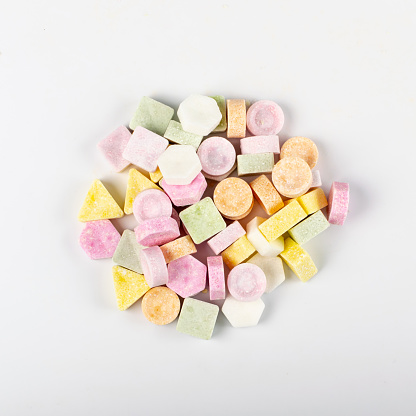

一夜漬けグッズ
一夜漬けで使えるグッズを2つ紹介したいと思います。
コーヒー
一つ目は、コーヒーです。カフェイン量はコーヒーやエナジードリンクの種類・容量によって異なるため、どちらが多いとは一概に言えません。利用する場合は製品表示を確認し、摂取量と時間帯に注意しましょう。
ラムネ

2つ目は、ラムネです。ラムネは他のお菓子よりもブドウ糖を多く含んでいます。ブドウ糖は、摂取することで脳に栄養が供給されるため、脳の活性化や疲労回復といった効果があります。そのため、ラムネは手軽に疲れた脳にエネルギーを供給できるのでおすすめです。